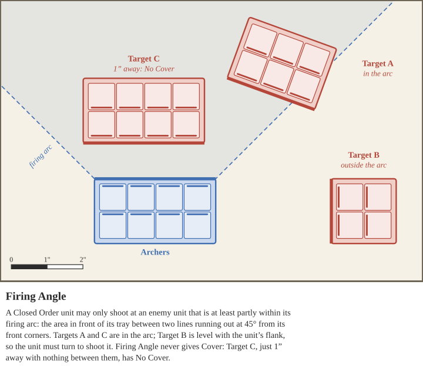
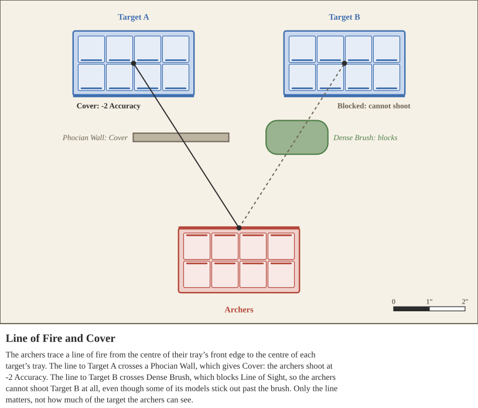

After the Movement Step, the activated unit will proceed to the Shooting Step. During this Step, the unit may use its missile weapons to attack enemies at range. Units may not shoot if they are Locked in Combat or have a Run, Flee, or Charge Action Token, unless otherwise stated. Keep in mind that Shooting attacks uniquely cause Suppression - meaning that even hits that don’t wound will cause the enemy to lose morale.
A unit that moved during its activation, including turning, shoots at -1 Accuracy. Every bonus and penalty to Shooting is explained in Shooting Modifiers, and summarized in the Shooting Accuracy Modifiers Table.
Before measuring, the player controlling the activated unit must first select a target they believe to be in range. The player also chooses at this time which weapon they are wishing to use for their shooting attacks. Players may not target friendly units with shooting attacks, and they may not target units Locked in Combat with friendly units either.
Each ranged weapon has a Range Value in inches (“). Use the Range Value of the weapon selected before measuring as the maximum distance for missile attacks, unless modified by special rules. Begin by measuring from any point on any model in the attacking unit to any point on any model in the defending unit, disregarding trays Closed Order units are on. If the shortest distance measured this way is greater than the Range Value of the attacking units selected weapon, the shooting attack fails. Otherwise, proceed to checking for Line of Sight.
To shoot, trace a line of fire from the attacking unit to the target. A Closed Order unit traces it from the centre of its tray. An Open Order unit chooses one of its models to act as its Leader for this shot and traces it from that model. The line runs to the centre of a Closed Order target’s tray, or to the closest model of an Open Order target that the line can reach without being Blocked. A target is Blocked only if no such model exists. Range is still measured from any model to any model (see above); the line of fire decides only whether the shot is Blocked and what Cover the target has.
Blocked. The unit cannot shoot the target if the line of fire crosses terrain that blocks Line of Sight (such as a Monument, Dense Brush or a burning Obstacle) or any Closed Order unit other than the target. It cannot shoot through any friendly unit unless it uses Volley.
Closed Order units must also consider Firing Angle, which decides whether the unit may shoot at a target at all. A Closed Order unit’s firing arc is the area in front of its tray between two lines running out at 45° from its front corners. It may only shoot at an enemy unit that is at least partly within this arc, so a Closed Order unit cannot fire sideways or backwards without turning its tray. Firing Angle does not affect the line of fire or Cover.

The target has cover if the line of fire crosses a terrain feature with a cover rating, or if the target is in one: for a Closed Order target, the centre of its tray; for an Open Order target, the model the line runs to. An Open Order enemy unit that the line crosses gives Light Cover. If more than one applies, use the best. Each terrain feature’s rules give its rating (see Terrain Features).
Light Cover: -1 Accuracy.
Cover: -2 Accuracy.
Heavy Cover: -2 Accuracy, and the attacker loses half of its shooting attacks, rounded down.
Aim ignores Light Cover, and Volley reduces Cover by one step (see Aim and Volley).

After determining Cover, each model in the attacking unit equipped with the selected ranged weapon contributes one attack for the Shooting Step. Some units may gain bonus attacks, and some units may have mixed equipment, reducing the number of attacks. For each attack, set aside one six-sided die. Then, consult the Shooting Modifiers Table, to determine if this attack will be modified. Note, this table references penalties and bonuses that are already referenced in other locations of this rulebook - do not count them twice, and consult their sources in the rulebook when possible for other related effects.
Penalties. A unit that moved during its activation, including turning, suffers -1 Accuracy. A unit cannot shoot at all if it has a Run, Charge, or Flee Action Token, if it Rallied itself or another unit this activation, or if it is Locked in Combat. The exceptions are Chariots and Elephants, which may still shoot at -2 Accuracy after Running or Fleeing (see Stable Firing), and Throwing Weapons (see below). Cover makes a target harder to hit: -1 Accuracy for Light Cover, and -2 for Cover or Heavy Cover; Heavy Cover also halves the attacks (see Cover). A target with Evasion that is in Open Order and has a Run Action Token imposes -1 Accuracy, and Cumbersome weapons suffer a further -1. Using Volley costs -1 Accuracy. Finally, a wounded unit shoots worse: -1 Accuracy at Weakened or Half Strength, and -2 at Mass Casualties (see Health Penalty Table).
Bonuses. A unit gains +1 Accuracy against a target at half of its weapon’s maximum range or less, and +1 Accuracy while it has a Hold Action Token. A unit that uses Aim gains a further +1 Accuracy and ignores the penalty for Light Cover.
Throwing Weapons. Javelins and other weapons with the Throwing Weapon special rule ignore the -1 Accuracy for moving. A unit with a Hold Action Token may even throw them at enemies it is Locked in Combat with, at -3 Accuracy and without Aim or Volley. In Closed Order, only the front two ranks throw. See Throwing Weapon for the full rule.
| Condition | Effect |
|---|---|
| Attacker moved | -1 Accuracy |
| Attacker has Run, Charge, or Flee Token | Cannot Shoot |
| Defender has Evasion, is Open Order, and has a Run Token | -1 Accuracy (another -1 for Cumbersome weapons) |
| Chariot or Elephant Attacker Ran or Fled | -2 Accuracy |
| Light Cover or Cover | -1 Accuracy (Light Cover) or -2 Accuracy (Cover) |
| Heavy Cover | -2 Accuracy, and lose half the attacks |
| Attacker used Volley Special Ability | -1 Accuracy |
| Attacker used Throwing Weapon Special Ability Locked in Combat, with a Hold Token | -3 Accuracy, cannot Aim or Volley |
| Using Any Other Weapon Locked in Combat | Cannot Shoot |
| Unit Rallied Self or Other | Cannot Shoot |
| Attacker is at Weakened or Half Strength | -1 Accuracy |
| Attacker is at Mass Casualties | -2 Accuracy |
| Defender is at Half Max Range or Less | +1 Accuracy |
| Attacker has Hold Token | +1 Accuracy |
| Attacker used Aim Special Ability | +1 Accuracy and ignore Light Cover |
| Attacker used Throwing Weapon Special Ability and moved | Ignore “Attacker moved” penalty |
After determining which bonuses apply to the attack, determine the final Accuracy used for this activation, and then roll all attacks. Use the Hitting Table below to determine which attacks hit.
As long as all of the attacks are the same Accuracy and Strength, roll them all together - otherwise roll and resolve them separately.
The Required Die Result columns have a terminology of X+, Lose X, and Gain X. When the table says X+, it means you must roll that value or greater on each attack rolled to hit. All other attacks miss. When the table says Gain X or Lose X, after determining the number of hits, you Gain X additional hits or Lose X attacks that would have otherwise hit. For example, if you roll 2 hits out of 10 attacks but must Lose 3, you lose both of your hits due to the poor Accuracy of the attackers.
| Accuracy | Required Die Result | Accuracy | Required Die Result |
|---|---|---|---|
| 1 | 5+, Lose 3 | 6 | 3+ |
| 2 | 5+, Lose 2 | 7 | 3+, Gain 1 |
| 3 | 5+, Lose 1 | 8 | 3+, Gain 2 |
| 4 | 5+ | 9 | 3+, Gain 3 |
| 5 | 4+ | 10 | 3+, Gain 4 |
Importantly, before moving on to determine which hits will wound the defending unit, shooting hits uniquely cause additional Army Morale loss for the defending unit.
For each hit from a Shooting attack, the defending player loses 1 Army Morale. Certain units, like Elephants, may lose additional morale from Shooting hits. Suppression is caused only by Hits from the attack roll, including bonus Hits gained from the Hitting Table. Extra Hits added by other rules, such as Piercing Shot (X) or Collision, wound and cause Damage as normal but do not cause Suppression. This also applies to Melee Suppression.
Then, for each successful hit you must roll to Wound. First, consult the Shooting Strength Modifier Table
| Condition | Modifier |
|---|---|
| Attacker used Volley Special Ability | -1 Strength |
| Attacker is at Weakened or Half Strength | -1 Strength |
| Attacker is at Mass Casualties | -2 Strength |
| Defender has Flee Token | +1 Strength |
| Direct Fire, target within ¼ of max range (½ with Recurve Bow) | +1 Strength |
The Wounding Table has the same exact evaluation as the Hitting table, with the same terminology. Use it to determine which hits Wound the enemy
| Strength | Required Die Result | Strength | Required Die Result |
|---|---|---|---|
| 1 | 5+, Lose 3 | 6 | 3+ |
| 2 | 5+, Lose 2 | 7 | 3+, Gain 1 |
| 3 | 5+, Lose 1 | 8 | 3+, Gain 2 |
| 4 | 5+ | 9 | 3+, Gain 3 |
| 5 | 4+ | 10 | 3+, Gain 4 |
While not every soldier in the ancient world had armor, most had some form of protection which could spare their lives from otherwise fatal blows.
For each Wound, the defending player will attempt to save a model by rolling an Armor Save. The value they need to roll is dependent on the cumulative amount of armor that model is wearing, modified by special rules certain weapons may have.
Common Armors are shown below.
| Armor | Armor Value | Move Penalty | Special Ability |
|---|---|---|---|
| Light Armor | 1 | 0 | |
| Medium Armor | 2 | 0 | -1 Armor while the unit has a Run or Flee Action Token |
| Heavy Armor | 3 | -1 | Unwieldy (1). -1 Armor while the unit has a Run or Flee Action Token |
| Buckler | 0 | 0 | +1 Armor against Melee attacks |
| Shield | 1 | 0 | +1 Armor while the unit has a Hold Action Token |
| Heavy Shield | 2 | -1 | +1 Armor while the unit has a Hold Action Token. -1 Armor while the unit has a Run or Flee Action Token |
| Barding | 1 | -1 | Horse armor, Cavalry only. Stacks with the rider's Body Armor and Shield |
Some unit types also have Armor Modifiers, granted by each Unit Type’s special rules (see Unit Types). They are listed here for reference and are not added a second time.
| Unit Type | Armor Modifier |
|---|---|
| Warrior | 0 |
| Cavalry | +1 |
| Chariot | +1 |
| Elephant | Always 3 (see Great Toughness) |
| Warmachine | Special |
Then after determining the total Armor Value of the enemy unit, taking into account modifiers, the defending player rolls one six-sided die per Wound, using the below table for their Armor Save:
| Armor Value | 0 | 1 | 2 | 3 | 4 | 5 | ≥6 |
|---|---|---|---|---|---|---|---|
| Armor Save | - | 6+ | 5+ | 4+ | 3+ | 2+ | 2+ |
As shown, no armor save can succeed on the roll of a 1, regardless of total armor value.
For each successful Save, the unit’s armor has protected them from harm. For each failed Save however, the unit suffers 1 Damage, and some Army Morale. Track the amount of damage a unit has suffered with a visually distinct die or set of counters.
In addition to Army Morale lost via Suppression, the player also loses additional Army Morale for failed Armor Saves. For each point of Damage suffered by a unit, the controlling player loses Army Morale equal to that unit’s base Training value.
As soon as a unit's Shooting attacks are resolved, the target subtracts the Damage from its Unit Health and checks its Penalty Category. See Damage & Health.
Unless a rule says otherwise, a unit may not make ranged attacks into a Melee that includes any friendly units. A unit that shoots into a Melee does not choose its target: randomly select one of the units Locked in Combat in that Melee and make all of its shooting attacks against that unit, however many units are in the Melee. If a rule allows a unit to shoot into a Melee with friendly units in it, friendly units are included in the random selection. A unit that is itself Locked in Combat never shoots into its own Melee this way: it may only make Shooting attacks against an enemy unit it is Locked in Combat with, using a Throwing Weapon (see Throwing Weapon).